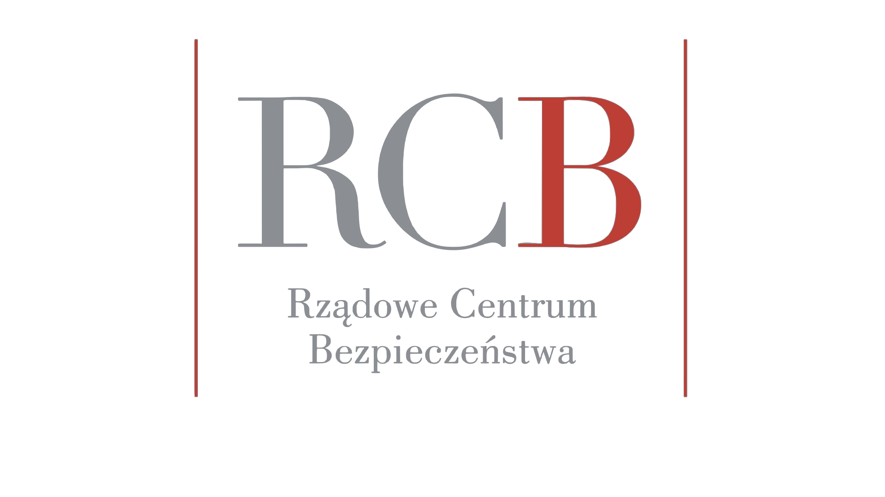
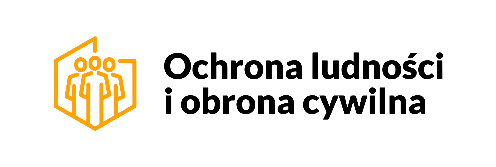

← Harmonogramy · SOiA · Biuro Informatyki i Łączności KG PSP
CivCom (civcom.soia.info) — służbowy komunikator zarządzania kryzysowego i ochrony ludności: szyfrowana komunikacja, logowanie kontem służbowym, katalog osób i gotowe pokoje robocze. Zastępuje komunikatory prywatne używane nieformalnie do spraw służbowych. Linia czasu obejmuje etap od rozpoznania technologii w marcu 2026 do zamknięcia etapu 14 września 2026.
Marzec – wrzesień 2026 · podział tygodniowy, opisane co drugi tydzień · przewiń w bok
Sam komunikator działa w przeglądarce i nie zależy od niczyich zgód. Inaczej jest z aplikacją na komputer: Windows i macOS blokują uruchomienie programu, który nie ma podpisu producenta. Bez certyfikatu Authenticode użytkownik zobaczy ostrzeżenie SmartScreen, bez Developer ID i notaryzacji Apple — macOS w ogóle nie pozwoli jej otworzyć. To ten sam typ przeszkody co konto Apple w harmonogramie ALARM.soia i trzeba go domknąć przed decyzją go / no-go 1 września.
| Ryzyko | Waga | Skutek, jeśli się zmaterializuje | Co je zdejmuje |
|---|---|---|---|
| Brak podpisu Windows i notaryzacji Apple dla aplikacji na komputer | Krytyczne | Aplikacja na komputer nie może zostać wydana publicznie; zostaje wersja w przeglądarce. | Uzyskanie certyfikatu Authenticode i Developer ID przed 01.09. |
| Dwa tygodnie między decyzją go / no-go a zakończeniem etapu | Wysokie | Uwagi z odbioru nie zdążą zostać wdrożone przed 14.09. | Testy akceptacyjne przed decyzją, nie po niej (24.08 – 06.09). |
| Logowanie kontem służbowym — zależność od AD i usługi tożsamości | Średnie | Użytkownicy nie zalogują się kontem służbowym, potrzebne konta lokalne. | Uzgodniona ścieżka OIDC i środowisko zapasowe po stronie infrastruktury. |
| Adopcja — konkurencja z komunikatorami prywatnymi | Średnie | Komunikacja służbowa dalej odbywa się w aplikacjach prywatnych. | Ambasadorzy w jednostkach, gotowe pokoje startowe, prostota obsługi. |
| Rozszerzenie na komendy wojewódzkie i powiatowe | Niskie | Poza zakresem tego etapu — nie wpływa na termin 14.09. | Ujęte jako osobny etap po zamknięciu bieżącego. |


Państwowa Straż Pożarna · Ministerstwo Spraw Wewnętrznych i Administracji · Rządowe Centrum Bezpieczeństwa · Ochrona Ludności i Obrona Cywilna